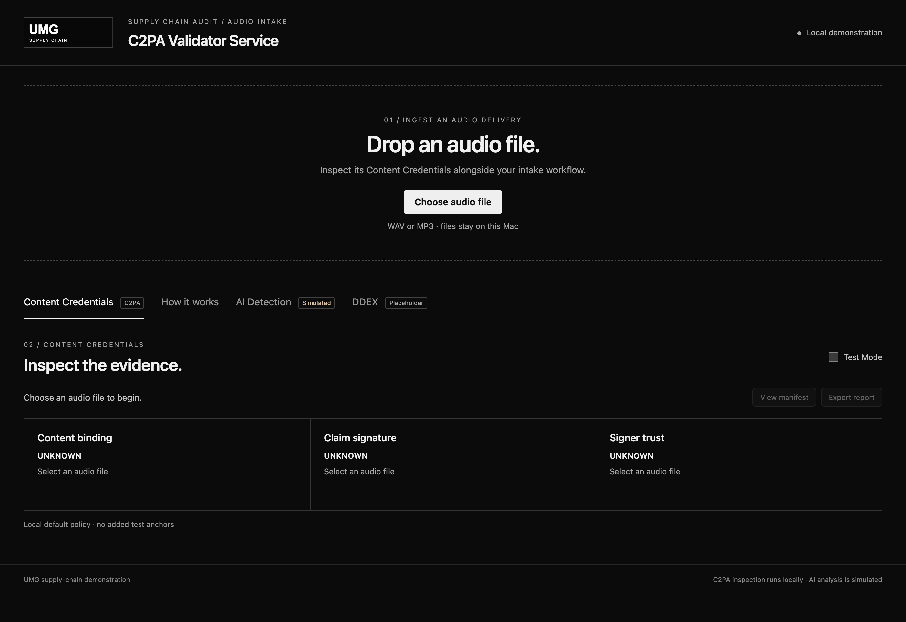

See Content Credentials inspection as one module in a music-delivery intake workflow.

git clone https://github.com/jeremybboy/umg-c2pa-validator-service.git cd umg-c2pa-validator-service npm ci npm run setup npm start
Requires macOS and Node.js 22.12 or later. To package a standalone application, run npm run build:mac, then npm run open:mac.

The Node reader returns a versioned report with binding, signature and signer trust checks, plus declared ingredients and raw manifest data. The same module can be used without the desktop window.
Source and quick start · Integration architecture · Testing and 40-second demo guide
AI analysis is simulated. DDEX is an illustrative placeholder. Test Mode is explicit and uses a pinned public test root. Personal demonstration repository, not a production UMG service or C2PA product-conformance claim; supplied audio is not distributed.